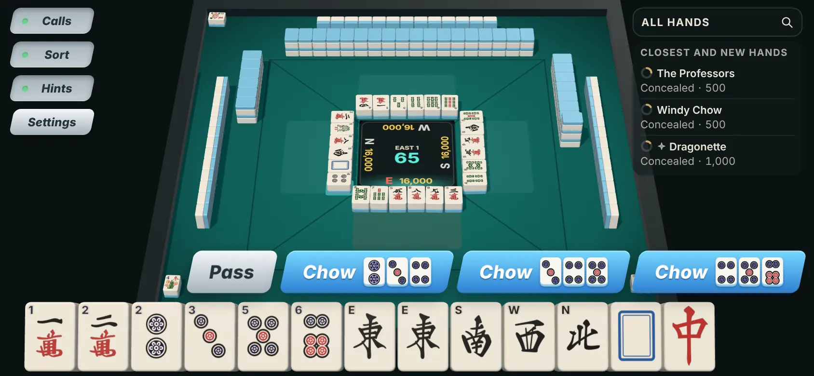
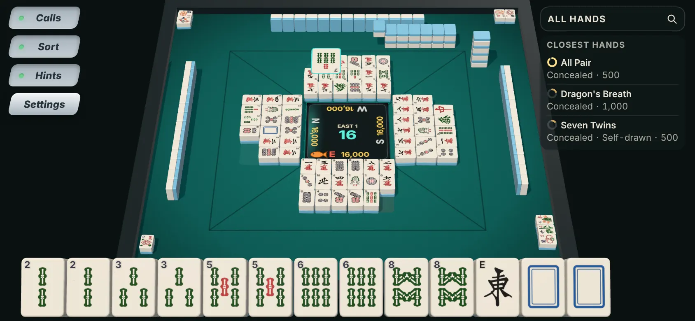
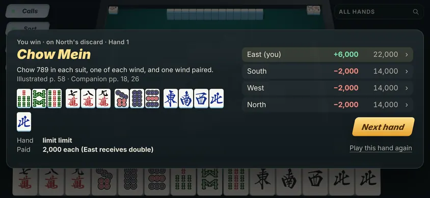
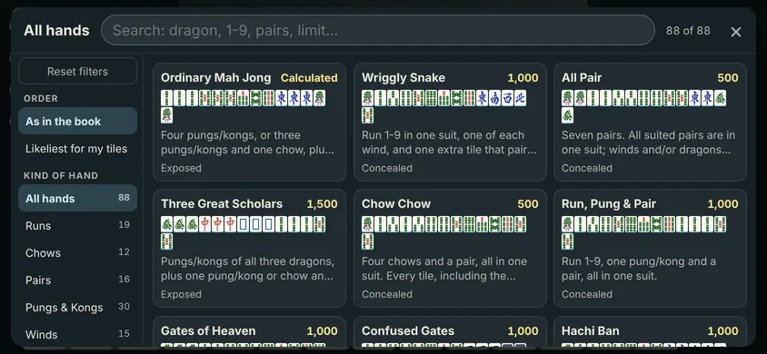
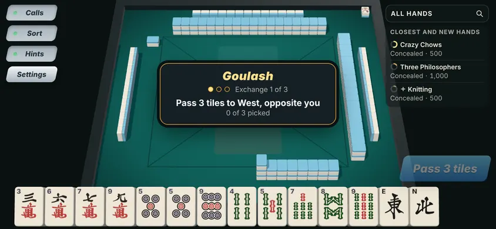
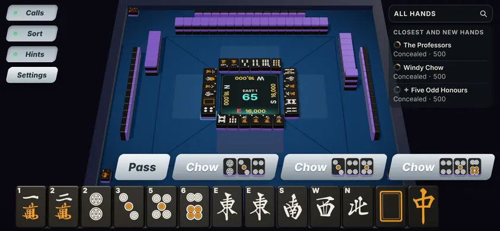
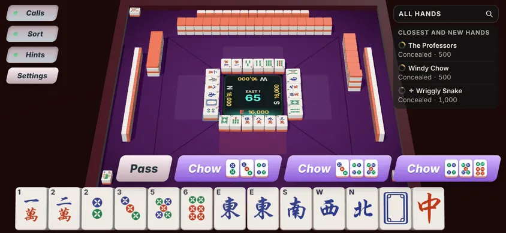
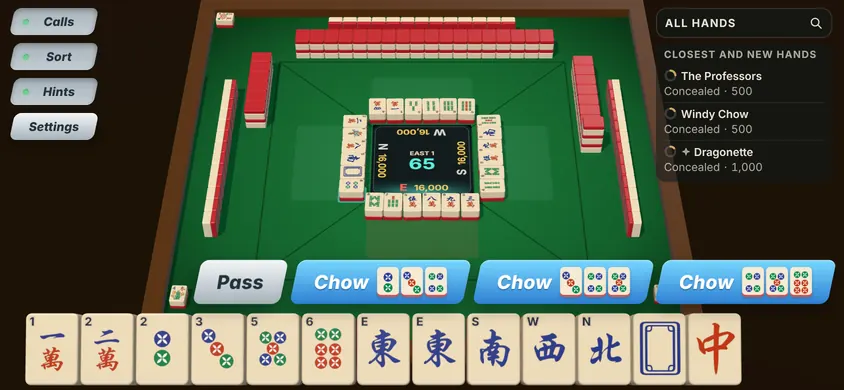

By the book
Rules, hands, scoring and payments follow The Game of Mah Jong Illustrated. The special hands also come from The Mah Jong Player's Companion. Every hand shows its page, so you can look it up in your own copy.
International mahjong by the book, on a 3D table in your browser.
Play three bots that plan their hands, or sit down with friends on your own phones. Every rule, hand and payment follows the printed rule book.

A complete game, start to finish, with the help you want and none you don't.
Rules, hands, scoring and payments follow The Game of Mah Jong Illustrated. The special hands also come from The Mah Jong Player's Companion. Every hand shows its page, so you can look it up in your own copy.
Open a room and share its four-letter code or link. Up to four people play, each on their own phone, and bots take the empty seats.
Each bot aims at real target hands and only calls when that makes its hand worth more. They play a hand you can learn from.
The closest-hands panel shows what your tiles could become. Fish marks show which throw leaves you fishing. Pin up to three hands to follow. Hints can be switched off.
An index of all the hands, with a sample of each. Search by tile or by name, sort by what your tiles are nearest to, and open any hand's sheet.
Chows, pungs and kongs, fishing, the Goulash and the next hand. The result card shows its sums, and the final standings come after the North round.
Choose the felt, tile backs, tile faces and the room, or pick a whole theme: Modern, Midnight, Sakura or Casino.
Against the bots, the game runs in airplane mode. It saves after every move, and it picks up where you left off.
Built for a phone held sideways. You can tap or drag tiles into place. On a computer, the arrow keys and Enter play the whole game.
A phone that locks or drops out comes straight back into its seat. Until then, a bot plays it. Each phone sees only its own tiles.







There is no app store and nothing to sign up for. Installed, it opens full screen with its own icon.